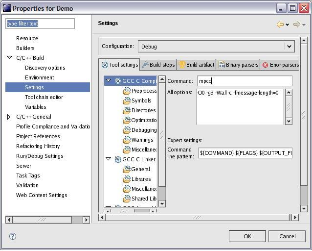
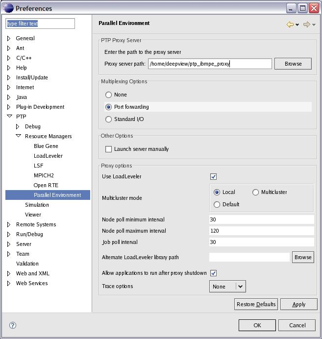
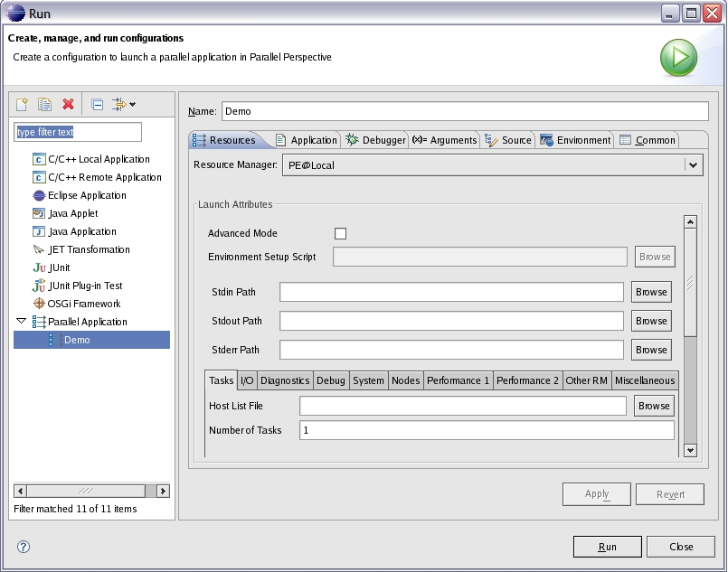

This plugin allows you to run a parallel application using IBM Parallel Environment from within the PTP framework. In addition to running applications, you can monitor their status, control their execution, and view their stdio output from within PTP.
In addition to having Eclipse and PTP installed, you need to have the following software packages installed.
See the IBM Parallel Environment for AIX and Linux Installation Guide, available at http://publib.boulder.ibm.com/epubs/pdf/am101m00.pdf for specific Parallel Environment installation requirements.
Define an appropriate project, either a C/C++ project using CDT or a FORTRAN project, using Photran. You can define either a standard make project or a managed make project.
When you define the project, you should specify the project location as a directory which is shared among all nodes where the parallel application will run to ensure Parallel Environment has access to the executable on all nodes. The following image shows how a project can be created using a directory visible to all nodes.
You should use the following compiler invocation commands to invoke the compiler, either in your makefile, or when specifying the compiler and linker in a managed make project.
The following image shows how the compiler is specified for a managed make project. The correct linker should also be specified by clicking the settings for the linker.
Once you have created your project, you should switch to the PTP runtime perspective, and set up the default preferences for Parallel Environment and specify the required resource manager. This setup needs to only be done once.
You specify the default preferences by opening the preferences dialog, opening the PTP node, opening the Resource Managers node, and then clicking the Parallel Environment entry. The PE preferences panel is displayed. Here, you specify the default path for a resource manager to be used for Parallel Environment.
Once you have set up preferences, create the resource manager for Parallel Environment. To do this, right-click in the resource managers view and selecting Add Resource Manager from the menu. A resource manager wizard will be displayed. Select PE from the list of resource manager types and click next. The next panel displayed configures the PE resource manager. Select the Remote service provider and proxy server location from the dropdown lists. You can also create a new proxy server location by clicking the New button in this pane. Specify the path to the proxy server executable, or just accept the value filled in as default from the preferences panel. Uncheck the Launch server manually and click next again. On the final page of the resource configuration manager wizard, either accept the default resource manager name, or uncheck the checkbox and enter a name and description for the resource manager. Then click finish to create the resource manager entry.
The image below shows the PE proxy configuration panel of the resource manager wizard.
You may have as many resource managers defined as you require for your system configuration.
Once you have defined a resource manager, you must start it before it can run a parallel application using that resource manager. To start a resource manager, right-click over the name of the resource manager in the resource manager view then select Start resource manager from the popup menu. Once started, the icon for the selected resource manager will turn green.
If necessary, you can stop a resource manager by right-clicking over its name in the resource manager and selecting Stop resource manager from the popup menu. Normally, a resource manger will shutdown automatically when PTP is shutdown, and if it was running when PTP was shutdown, then it will automatically start when PTP is started again.
Once an application has been compiled, the first step in running the application is to be sure the resource manager for Parallel Environment is running on the node where you intend to start the application. To do this, check the resource manager's entry in the resource manager view. The icon for the resource manager should be green. If it is not green, then right click over the resource manager's name and select Start resource manager from the popup menu to start the resource manager.
Before running an application, it must have a launch configuration defined for it. A launch configuration contains all of the settings required to run the application. The values entered in a launch configuration are saved so that the next time the application is run using the same launch configuration, those values do not need to be entered again.
To create a launch configuration, click the Run menu in the Eclipse menubar and select Open Run Dialog. Alternatively, click the dropdown next to the run icon in the Eclipse toolbar and select Open Run Dialog. When the run dialog is displayed, right click over Parallel Application and click New from the menu. This will create a new launch configuration. Set its name to the desired value. Select the Main tab and fill in the name of the project and the application program. Make sure that the debugger tab has an appropriate debugger selected. Fill in the Arguments tab with any application program arguments. Fill in the Environment tab with any environment variable settings required by the application. If you are using Parallel Environment in basic mode, described below, then you should not set any Parallel Environment environment variables (starting with MP_) in the Environment tab and not specify any options specific to the poe command in the Arguments tab, since those settings may conflict with settings in the Parallel tab and cause application invocation to fail.
The Parallel tab is the tab where invocation options unique to Parallel Environment are specified. When it is initially displayed, it will appear as follows.
The first step is to select a resource manager from the dropdown list at the top of the parallel tab. This list contains entries for each running resource manager. The Select queue dropdown can be ignored since there are no job queues used by the Parallel Environment resource manager. (The queue dropdown will be removed in the future).
The next step is to select the run mode for the resource manager by checking or unchecking the Advanced Mode checkbox.
When this checkbox is checked, the resource manager is running in advanced mode. In this mode, you need to have an existing setup script created. This is a text file, similar to a .rc or .profile script, where you specify Parallel Environment environment variable settings. Each setting is specified as a keyword-value pair such as
MP_PROCS=2This file should contain only Parallel Environment environment variable settings. Anything else is ignored. Environment variable settings in this file are not validity checked. You may also specify Parallel Environment environment variables in the Environment tab in this mode, as well as specifying parameters to the poe command in the Arguments tab in advanced mode. Any settings in these tabs will not be checked, and may result in conflicts with what is specified in the setup script.
When using advanced mode, the Environment Setup Script will be enabled, and you must fill in the pathname to the setup script.
If the Advanced Mode checkbox is not checked, then the resource manager is running in basic mode. In this mode, the tabbed pane at the bottom of the Parallel tab will be enabled, and you can fill in the required values for running your application.
In basic mode, each Parallel Environment option has a field in the tabbed pane at the bottom of the parallel tab. Each field has flyover help, where you can see that help by moving the mouse over the field in question. Each field is validity checked where possible to reduce the probability of invoking an application with invalid parameters.
If any value in the parallel tab is invalid, an error message will appear in the upper left corner of the launch configuration dialog and the apply and run buttons will be disabled. Once all fields have valid values, then you can click the Applybutton to save the current settings for the launch configuration, or click the Run button to invoke the application.
As a minimum, the launch configuration or the Parallel Environment setup script must specify the path name of a valid hostfile (MP_HOSTFILE) and number of parallel tasks (MP_TASKS)
The default behavior is that data the application writes to stdout is sent to the PTP GUI. That data can be viewed by double clicking the task icon for the task, normally task 0, in the jobs view row for the application. This will open a process view window showing the data. By default, the application stderr output is written to the console where Eclipse was invoked.
If the application writes a large amount of data to stdout or stderr, the default behavior of sending that data to the PTP GUI for handling can cause the GUI to become slow or unresponsive. Alternatively, stdout and stderr can be redirected to files on the node where the resource manager process is running. This is done by specifying the path name for stdout or stderr in the fields labelled Stdout Path or Stderr Path in the parallel tab of the launch configuration.
Once you click run to invoke the application, the resource manager will monitor the application's execution. When Parallel Environment allocates tasks to nodes, the default machine view for the resource manager will be updated to show the nodes that are currently in use. If you move the mouse over a node icon, in the machine view, you will see the hostname for that node. If you double click a node icon in the machine view, the node attributes and process info windows in the machine view will be updated to report current status for that node. Once a job completes, the machines view will be updated to show the current status. As applications complete, nodes may disappear from the machine view if no other parallel tasks invoked by you are using those nodes.
Once a parallel application starts, the jobs view will be updated to show an entry for that job, along with icons for each task in the application. The job and task icons will change state once Parallel Environment setup is complete to show the job is running, and again when the application exits, to show that the job has completed. At any time that a job is shown in the jobs view, you can double click a task icon to show the stdout output for that task if stdout has not been redirected to a file.